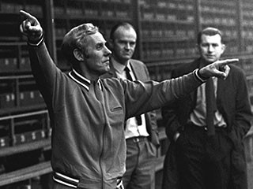

Chương 4

ai năm ở Queen’s Park Alex Fergusonsống chan hòa, đoàn kết cùng đồng đội.Bầu không khí tại Hampden Park đầm ấm như trong một gia đình thuận hòa. Tuy thế, nếu cứ ở lại Hampden, thì việc thăng tiến trong sự nghiệp là điều bất khả: Một đội bóng thuần túy nghiệp dư chẳng thể nào có cơ hội thăng lên hạng nhất. Bởi vậy, khi được St Johnstone tiếp cận, Alex cảm thấy lung lay. St Johnstone vừa vô địch hạng nhì, năm sau sẽ tranh tài ở hạng nhất, rõ ràng hơn hẳn Queen’s Park. Tuyển trạch viên của St Johnstone lại thổi vào tai Alex đủ lời đường mật, hứa hẹn rằng nếu sang đá tại sân Muirton Park, sẽ được trọng dụng ngay trong đội hình chính thức. Nghe bùi tai, Alex rời Queen’s Park vào mùa hè năm 1960.
St Johnstone đóng bản doanh tại Perth, một thành phố miền Trung Scotland. Hằng tuần, Alex tập cùng đội hai buổi tối, mỗi lần tập là phải lặn lội đi từ Glasgow lên tận Perth. Vừa kết thúc ca làm việc ban chiều tại xưởng Remington Rand vào lúc bốn giờ, anh tất tả lênxe buýt ra nhà ga, đón xe lửa đi đến Glasgow Central. Từ Glasgow Central, phải vẫy taxi đến một nhà ga khác ở đường Buchanan, rồi từ ga này, lại ngồi xe lửa trong suốt hai tiếng để đến Perth. Rời nhà ga Perth, còn phải đón thêm chuyến taxi cuối cùng đến Muirton Park nữa.Tới lúc đi về cũng khốn khổ như thế. Tính ra mỗi ngày có buổi tập, Alex bắt đầu đi từ lúc bốn giờ chiều, mãi đến một giờ đêm mới về được đến nhà, chỉ kịp ngủ nghỉ qua loa, sáng mai lại phải đi làm sớm.
Vất vả hết sức để được cái gì? Thưa rằng: Chỉ để thỏa mãn ước mơ chơi bóng đó thôi, chứ chẳng được gì sất. Alex lúc ấy vẫn là cầu thủ nghiệp dư, không có đồng lương nào, ngay cả phụ cấp di chuyển (vé xe buýt, xe lửa, taxi) cũng bị CLB tìm mọi cách để quỵt. Theo đúng như thủ tục, mỗi thứ bảy, cầu thủ chỉ việc nộp các hóa đơn, sang tuần sẽ được hoàn trả toàn bộ tiền vé xe. Nhưng trên thực tế, chẳng bao giờ có chuyện nhanh chóng như vậy. Cứ thấy quá hạn mà chưa có tiền, Alex lại phải đập cửa văn phòng HLV Bobby Brown, và lần nào Brown cũng viện hết cớ này cớ nọ để trì hoãn.
Rốt cuộc, chịu không thấu, Alex đành tập chung với các CLB ở gần nhà như Third Lanark và Airdrie. Giải pháp này dĩ nhiên chẳng lý tưởng gì, vì bình thường tập cùng đội khác, chỉ đến ngày thi đấu mới gặp đồng đội, làm sao có thể có sự ăn ý? Song như thế vẫn hơn là mỗi tuần lặn lội hằng bao nhiêu cây số, chỉ để bị quỵt tiền.
Còn về lời hứa được đá chính tại St Johnstone thì chẳng qua chỉ là hứa hão.Sau này, nhìn lại bốn năm ở Muirton Park, Alex cho đó là một sai lầm lớn.Trong mùa bóng đầu tiên, anh chủ yếu khoác áo đội dự bị, chỉ được chơi cho đội chính đúng năm lần. Năm 1961 đối với anh đầy rẫy những chuyện không như ý. Thêm vào nỗi buồn sự nghiệp, anh đón nhận hung tin cha mình mắc chứng ung thư đường ruột. Nhờ được phẫu thuật kịp thời, ông qua khỏi, nhưng sức khỏe suy yếu hẳn đi, buộc phải chuyển sang làm những công việc nhẹ nhàng hơn, khiến cho lương bổng giảm hẳn. Tình thế ấy làm Alex phải suy nghĩ: Cha nay đã yếu rồi, mình trở thành trụ cột gia đình, chẳng lẽ cứ đi lông bông đá banh không tiền thế này hay sao? Nghĩ vậy, anh quyết định ký hợp đồng bán chuyên cùng St Johnstone. Từ đây, anh ăn lương một lúc hai nơi: Lương thợ tập sự và lương cầu thủ. Chẳng nhiều nhặn gì, nhưng hai nguồn góp lại cũng cho phép anh sống phong lưu một chút.
Không sử dụng Alex thường xuyên, song HLV Bobby Brown thừa nhận anh có tố chất của một thủ lĩnh, không chỉ trong mà còn bên ngoài sân cỏ.Còn trẻ măng, chỉ là em út, mà anh đã giữ vai trò như một người phát ngôn cho các đồng đội.Trong việc đấu tranh đòi quyền lợi cho cầu thủ, anh luôn là người đi đầu. Có lẽ chính vì vậy mà ban lãnh đạo không ưa anh chăng? Trong hai năm tiếp theo, Alex vẫn chỉ đóng vai trò dự bị, còn St Johnstone thì vất vả ngụp lặn, rớt xuống hạng nhì, rồi ngoi lên hạng nhất trở lại. Đến đầu mùa 1963-1964, anh mất kiên nhẫn, nhất quyết không chịu gia hạn hợp đồng, kết quả là bị đày xuống chơi với đội hình hai.Sang tháng 11, St Johnstone đồng ý bán Alex cho Raith Rovers thì anh lại nhất quyết không chịu đi.
Cuối năm 1963, Alex gần như mất toàn bộ niềm tin nơi bóng đá. Anh dự định nghỉ hẳn, di cư sang Canada làm thợ. Đội hình hai của St Johnstone liên tiếp thảm bại, hôm trước thua Celtic 1-10, hôm sau thua Kilmarnock 2-11! Theo lịch đấu, trong trận kế tiếp, họ sẽ phải đối đầu Glasgow Rangers. Gặp Kilmarnock còn ôm 11 “trứng”, đá với Rangers liệu thua bao nhiêu đây? Nghĩ đến đó, Alex hết muốn ra sân. Anh nhờ cô bạn gái của Martin giả làm giọng bà Lizzie, gọi điện cho Bobby Brown xin cho anh nghỉ phép vì bị cúm. Chẳng biết cô nàng giả giọng giỏi thế nào mà Alex vừa về đến nhà, đã thấy ông bố ngồi hầm hầm đợi sẵn, còn bà mẹ vội vã chuyền tay cho anh bức điện của Brown, trong chỉ vắn tắt mấy chữ “Gọi cho tôi ngay”.
“Bây giờ phải làm sao?” Alex lúng túng
“Lại còn làm sao?”Ông bố quát “Tao bảo cho biết phải làm sao nhé. Đi ra ngoài kia, kiếm cái điện thoại công cộng, gọi cho ông ấy mà xin lỗi. Không chịu làm thì đừng vác mặt về đây!”
Độc giả đoán xem, khi Alex gọi đến, Brown sẽ nói gì?
Phạt lương chăng?Cảnh cáo chăng?Đuổi việc chăng?
Sai tất!
Sau đây là nguyên văn lời Bobby Brown:
“A, cậu đấy à?Dám nhờ đứa nào gọi đến lừa tôi hè?Tôi thừa biết đó có phải mẹ cậu đâu.Nghe này, đội hình chính đang có đến năm cầu thủ bị cúm thật.12 giờ ngày mai liệu mà đến trình diện tại khách sạn Buchanan nghe chưa, không thì khốn đấy!”
Hôm sau, Alex có mặt đúng giờ tại khách sạn, và nhận thông báo anh sẽ được ra sân trong đội hình chính trận St Johnstone-Glasgow Rangers.Đi kèm suất đá chính là hai tấm vé đặc biệt.Đương nhiên, Alex tặng một vé cho cha.
"Đi thì đi", ông Alex bố làm ra vẻ lãnh đạm "Dù sao thì hôm đó cũng chẳng có gì để làm".
Ông không biết mình sắp sửa được chứng kiến một điều kỳ diệu!

HLV Bobby Brown (ảnh: Scottishfa.co.uk)